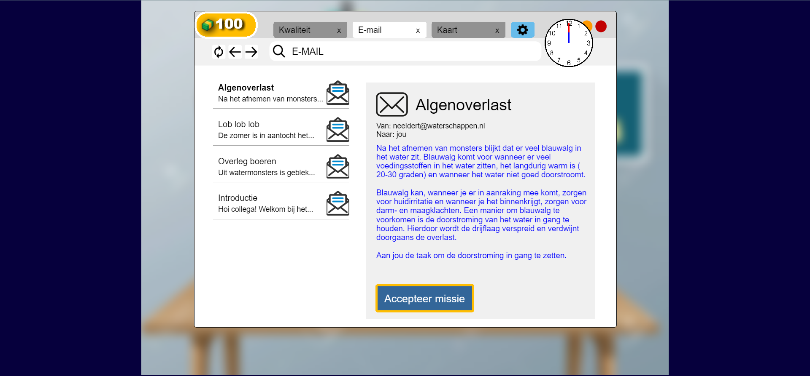
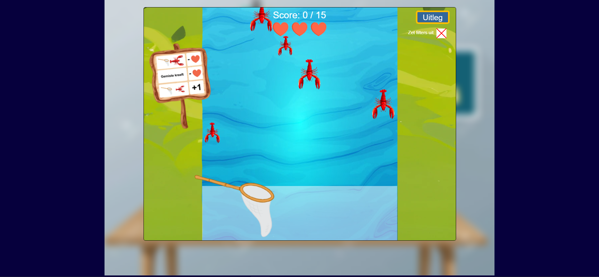
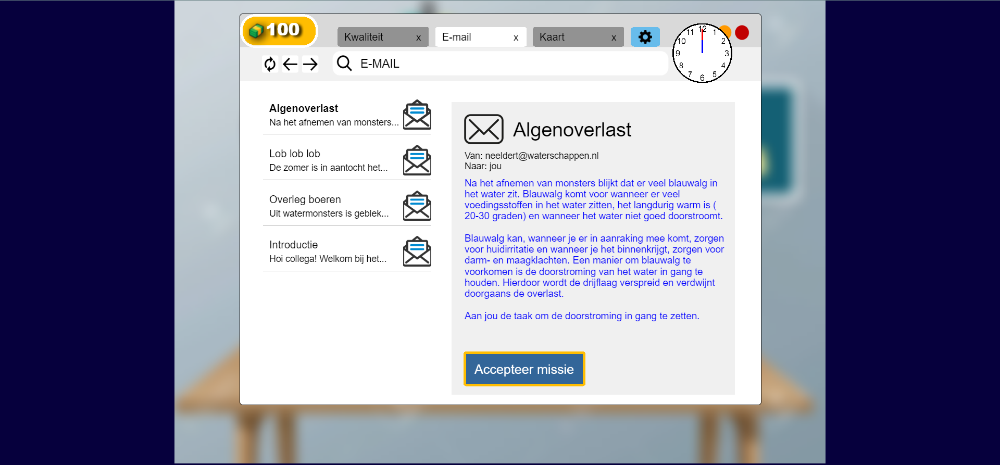
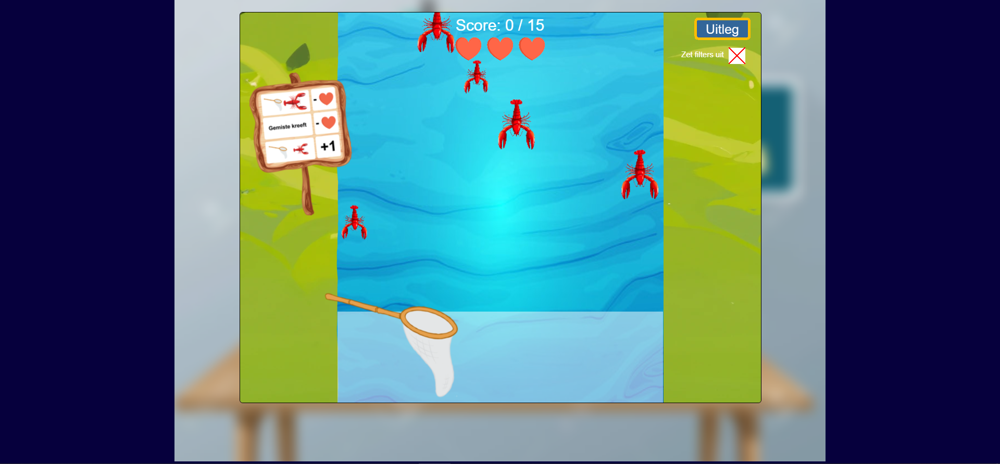

Life Below Water
This game was developed to contribute to the SDG Life Below Water. Working with a team of five students, we created an interactive educational game for the Hoogheemraadschap van Schieland en de Krimpenerwaard. The game teaches children about water systems, water management, and the role of Dutch water boards. Developed in Typescript using PIXI.js, the game combines educational content and interactive challenges to make learning about water fun and accessible for young audiences.
 



Project Context
Our team was tasked with desiging an educational solution to raise awareness about water management and SDG Life Below Water. Through a combination of desk research and field research, we developed a game that introduces children to the importance of water systems in the Netherlands, helping them understand both local an national water management practices.
My Role
I contributed to both development and technical implementation. Specifically, I designed and implemented the UI for the game, including the start screen, settings screen, and interactive buttons across other screens. I also created and integrated sound effects to enhance the player experience. Additionally, I assisted in reviewing and testing teammates' code to ensure functionality and consistency.
Beyond the technical work, I took responsibility for several practical and project management tasks. I drafted a team collaboration agreement to ensure all members adhered to shared expectations. I conducted market research to analyze existing educational products an gain insights for our game design. Furthermore, I defined Jobs to Be Done, developed value propositions, and created a Business Model Canvas to structure and communicate our project strategy effectively.